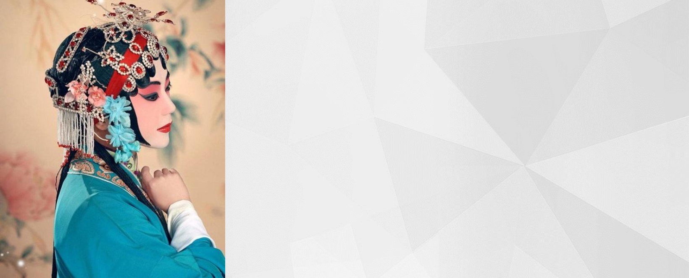
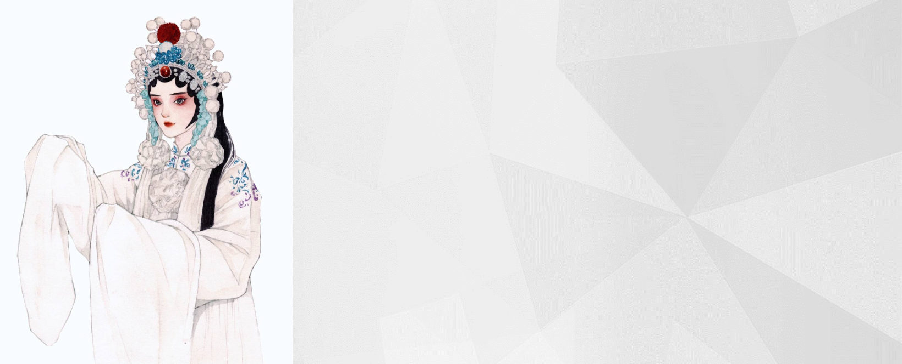
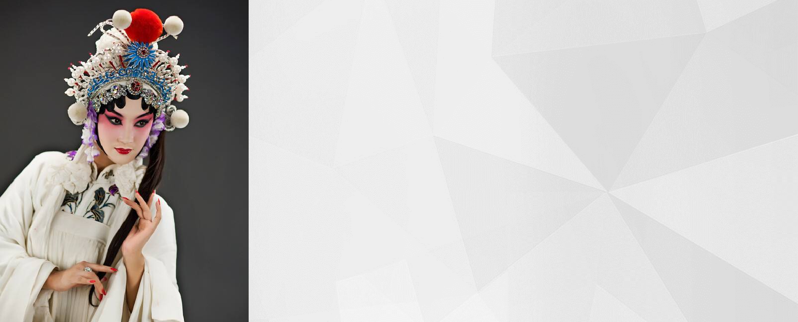
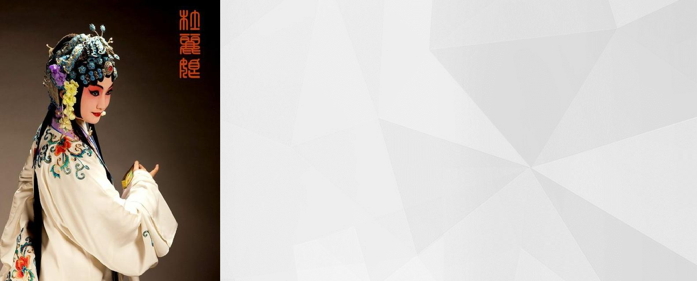

京剧发展史

徽秦合流 清初,京城戏曲舞台上盛行昆曲与京腔(弋阳腔)。乾隆中叶后,昆曲渐而衰落,京腔兴盛取代昆曲一统京城舞台。乾隆四十五年(1780年)秦腔艺人魏长生由川进京。魏氏搭双庆班演出秦腔《滚楼》、《背娃进府》等剧。魏长生扮相俊美,噪音甜润,唱腔委婉,做工细腻,一出《滚楼》即轰动京城。双庆班也因此被誉为“京都第一”。自此,京腔开始衰微,京腔六大名班之大成班、王府班、余庆班、裕庆班、萃庆班、保和班也无人过问,纷纷搭入秦腔班谋生。乾隆五十年(1785年),清廷以魏长生的表演有伤风化,明令禁止秦腔在京城演出,将魏长生逐出京城。
乾隆五十五年(1790年),继三庆徽班落脚京城后(班址位于韩家台胡同内),又有四喜、启秀、霓翠、春台、和春、三和、嵩祝、金钰、大景和等班,亦在大栅栏地区落脚演出。其中以三庆、四喜、和春、春台四家名声最盛,故有“四大徽班”之称。‘春台班’进京时间,按汉调名家米应先于乾隆末年,在京曾担任‘春台班’台柱时始,证明该班进京时间早于‘四喜’和‘和春’。‘春台班’位于百顺胡同。
‘四喜班’于嘉庆初来京。徽戏、昆曲兼演、尤以昆曲为著,故有“新排一曲桃花扇,到处哄传四喜班”之语。该班位于陕西巷内。
‘和春班’于嘉庆八年(1804年)于李铁拐斜街组建。该班以武戏见长。道光十三年(1853年)解散。“四大徽班”的演出剧目,表演风格,各有其长,故时有“三庆的轴子,四喜的曲子、和春的把子、春台的孩子”之誉。“四大徽班”除演唱徽调外,昆腔、吹腔、四平调、梆子腔亦用,可谓诸腔并奏。在表演艺术上广征博采 吸取诸家剧种之长,融于徽戏之中。兼之演出阵容齐整,上演的剧目丰富,颇受京城观众欢迎。自魏长生被迫离京,秦腔不振,秦腔艺人为了生计,纷纷搭入徽班,形成了徽、秦两腔融合的局面。在徽、秦合流过程中,徽班广泛取纳秦腔的演唱、表演之精和大量的剧本移植,为徽戏艺术进一步发展,创造了有利条件。
徽汉合流 汉剧流行于湖北,其声腔中的二簧、西皮与徽戏有着血缘关系。徽、汉二剧在进京前已有广泛的艺术交融。继乾隆末年,汉剧名家米应先进京后,道光年初(1821年),先后又有著名汉剧老生李六、王洪贵、余三胜,小生龙德云等入京,分别搭入徽班春台、和春班演唱。米应先以唱关羽戏著称,三庆班主程长庚的红净戏,皆由米应先所授。李六以《醉写吓蛮书》、《扫雪》见长;王洪贵则以《让成都》、《击鼓骂曹》而享名;小生龙德云善演《辕门射戟》、《黄鹤楼》等剧;余三胜噪音醇厚,唱腔优美,文武兼备,以演《定军山》、《四郎探母》、《当锏卖马》、《碰碑》等老生剧目著称。汉剧演员搭入徽班后,将声腔曲调,表演技能,演出剧目溶于徽戏之中,使徽戏的唱腔板式日趋丰富完善,唱法、念白更具北京地区语音特点,而易于京人接受。道光二十五年(1845年)各大名班,均为老生担任领班。徽、汉合流后,促成了湖北的西皮调与安徽的二簧调再次交流。徽、秦、汉的合流,为京剧的诞生奠定了基础。
一、孕育期
徽秦合流 清初,京城戏曲舞台上盛行昆曲与京腔(弋阳腔)。乾隆中叶后,昆曲渐而衰落,京腔兴盛取代昆曲一统京城舞台。乾隆四十五年(1780年)秦腔艺人魏长生由川进京。魏氏搭双庆班演出秦腔《滚楼》、《背娃进府》等剧。魏长生扮相俊美,噪音甜润,唱腔委婉,做工细腻,一出《滚楼》即轰动京城。双庆班也因此被誉为“京都第一”。自此,京腔开始衰微,京腔六大名班之大成班、王府班、余庆班、裕庆班、萃庆班、保和班也无人过问,纷纷搭入秦腔班谋生。乾隆五十年(1785年),清廷以魏长生的表演有伤风化,明令禁止秦腔在京城演出,将魏长生逐出京城。
乾隆五十五年(1790年),继三庆徽班落脚京城后(班址位于韩家台胡同内),又有四喜、启秀、霓翠、春台、和春、三和、嵩祝、金钰、大景和等班,亦在大栅栏地区落脚演出。其中以三庆、四喜、和春、春台四家名声最盛,故有“四大徽班”之称。‘春台班’进京时间,按汉调名家米应先于乾隆末年,在京曾担任‘春台班’台柱时始,证明该班进京时间早于‘四喜’和‘和春’。‘春台班’位于百顺胡同。
‘四喜班’于嘉庆初来京。徽戏、昆曲兼演、尤以昆曲为著,故有“新排一曲桃花扇,到处哄传四喜班”之语。该班位于陕西巷内。
‘和春班’于嘉庆八年(1804年)于李铁拐斜街组建。该班以武戏见长。道光十三年(1853年)解散。“四大徽班”的演出剧目,表演风格,各有其长,故时有“三庆的轴子,四喜的曲子、和春的把子、春台的孩子”之誉。“四大徽班”除演唱徽调外,昆腔、吹腔、四平调、梆子腔亦用,可谓诸腔并奏。在表演艺术上广征博采 吸取诸家剧种之长,融于徽戏之中。兼之演出阵容齐整,上演的剧目丰富,颇受京城观众欢迎。自魏长生被迫离京,秦腔不振,秦腔艺人为了生计,纷纷搭入徽班,形成了徽、秦两腔融合的局面。在徽、秦合流过程中,徽班广泛取纳秦腔的演唱、表演之精和大量的剧本移植,为徽戏艺术进一步发展,创造了有利条件。
徽汉合流 汉剧流行于湖北,其声腔中的二簧、西皮与徽戏有着血缘关系。徽、汉二剧在进京前已有广泛的艺术交融。继乾隆末年,汉剧名家米应先进京后,道光年初(1821年),先后又有著名汉剧老生李六、王洪贵、余三胜,小生龙德云等入京,分别搭入徽班春台、和春班演唱。米应先以唱关羽戏著称,三庆班主程长庚的红净戏,皆由米应先所授。李六以《醉写吓蛮书》、《扫雪》见长;王洪贵则以《让成都》、《击鼓骂曹》而享名;小生龙德云善演《辕门射戟》、《黄鹤楼》等剧;余三胜噪音醇厚,唱腔优美,文武兼备,以演《定军山》、《四郎探母》、《当锏卖马》、《碰碑》等老生剧目著称。汉剧演员搭入徽班后,将声腔曲调,表演技能,演出剧目溶于徽戏之中,使徽戏的唱腔板式日趋丰富完善,唱法、念白更具北京地区语音特点,而易于京人接受。道光二十五年(1845年)各大名班,均为老生担任领班。徽、汉合流后,促成了湖北的西皮调与安徽的二簧调再次交流。徽、秦、汉的合流,为京剧的诞生奠定了基础。

道光二十年至咸丰十年(1840年-1860年)间,经徽戏、秦腔、汉调的合流,并借鉴吸收昆曲、京腔之长而形成了京剧。其标志之一:曲调板式完备丰富,超越了徽、秦、汉三剧中的任何一种。唱腔由板腔体和曲牌体混合组成。声腔主要以二簧、西皮为主;之二,行当大体完备;之三,形成了一批京剧剧目;之四,程长庚,余三胜、张二奎为京剧形成初期的代表,时称“老生三杰”、“三鼎甲”即:“状元”张二奎、“榜眼”程长庚、“探花”余三胜。他们在演唱及表演风格上各俱特色,在创造京剧的主要腔调西皮、二簧上和京剧戏曲形式上,以及具有北京语言特点的说白、字音上,做出了卓越贡献。第一代京剧演员中,尚有老生卢胜奎、薛印轩、张汝林、王九龄等;小生龙德云、徐小香;旦胡喜禄、罗巧福、梅巧玲:丑杨鸣玉、刘赶三;老旦郝兰田、谭志道;净朱大麻子,任花脸等,他们为丰富各个行当的声腔及表演艺术,均有独特创造。后任‘四喜班’班主的梅巧玲,勇于突破青衣、花旦的严格分工旧规,为旦角的演唱艺术开辟了一条新路。
《同光名伶十三绝》 是京剧史上的一幅名伶彩色剧装写真画，由晚清民间画师沈蓉圃绘制。他参照了清代中叶画师贺世魁所绘《京腔十三绝》戏曲人物画的形式，挑选了清同治、光绪年间（l860至1890）京剧舞台上享有盛名的十三位演员，用工笔重彩把他们扮演的剧中人物描绘出来，显示了作者的深厚功力。 此画于民国三十二年(1943年)，由进化社朱复昌在书肆收购,经缩小影印问世,并附编《同光名伶十三绝传》一册。
二、形成期
道光二十年至咸丰十年(1840年-1860年)间,经徽戏、秦腔、汉调的合流,并借鉴吸收昆曲、京腔之长而形成了京剧。其标志之一:曲调板式完备丰富,超越了徽、秦、汉三剧中的任何一种。唱腔由板腔体和曲牌体混合组成。声腔主要以二簧、西皮为主;之二,行当大体完备;之三,形成了一批京剧剧目;之四,程长庚,余三胜、张二奎为京剧形成初期的代表,时称“老生三杰”、“三鼎甲”即:“状元”张二奎、“榜眼”程长庚、“探花”余三胜。他们在演唱及表演风格上各俱特色,在创造京剧的主要腔调西皮、二簧上和京剧戏曲形式上,以及具有北京语言特点的说白、字音上,做出了卓越贡献。第一代京剧演员中,尚有老生卢胜奎、薛印轩、张汝林、王九龄等;小生龙德云、徐小香;旦胡喜禄、罗巧福、梅巧玲:丑杨鸣玉、刘赶三;老旦郝兰田、谭志道;净朱大麻子,任花脸等,他们为丰富各个行当的声腔及表演艺术,均有独特创造。后任‘四喜班’班主的梅巧玲,勇于突破青衣、花旦的严格分工旧规,为旦角的演唱艺术开辟了一条新路。
《同光名伶十三绝》 是京剧史上的一幅名伶彩色剧装写真画，由晚清民间画师沈蓉圃绘制。他参照了清代中叶画师贺世魁所绘《京腔十三绝》戏曲人物画的形式，挑选了清同治、光绪年间（l860至1890）京剧舞台上享有盛名的十三位演员，用工笔重彩把他们扮演的剧中人物描绘出来，显示了作者的深厚功力。 此画于民国三十二年(1943年)，由进化社朱复昌在书肆收购,经缩小影印问世,并附编《同光名伶十三绝传》一册。

1883年一1918年,京剧由形成期步入成熟期,代表人物为时称“老生后三杰”的谭鑫培、汪桂芬、孙菊仙。其中谭鑫培承程长庚、余三胜、张二奎各家艺术之长,又经创造发展,将京剧艺术推进到新的成熟境界。谭在艺术实践中广征博采,从昆曲、梆子、大鼓及京剧青衣、花脸、老旦各行中借鉴,融于演唱之中,创造出独具演唱艺术风格的“谭派”，形成了“无腔不学谭”的局面。二十年代后的余叔岩、言菊朋、高庆奎、马连良等,均在宗“谭派”的基础上发展为各自不同的艺术流派。汪桂芬,艺宗程长庚,演唱雄劲沉郁,悲壮激昂，腔调朴实无华,有“虎啸龙吟”的评道,他因“仿程可以乱真”,故有“长庚再世”之誉。孙菊仙,18岁时选中武秀才,善唱京剧,常入票房演唱,36岁后投师程长庚。他噪音宏亮,高低自如。念白不拘于湖广音和中州韵,多用京音、京字,听来亲切自然。表演大方逼真,接近生活。“老生后三杰”师承各有侧重,艺术风格各异,从全面权衡,谭鑫培文武昆乱不挡,艺术造诣及对京剧的发展,远远超过汪、孙。光绪年间,谭鑫培被称之为“伶界大王”,在剧界地位,如当年之程长庚。咸丰十年(1861年)京剧始入宫廷演出。当年五月初六起至月末,分由三庆班、四喜班、双奎班及外班(京剧班)演出。光绪九年(1883年),慈禧五旬寿日,挑选张淇林、杨隆寿、鲍福山、彩福禄、严福喜等18人入宫当差,不仅演唱,且当京剧教习,向太监们传授技艺。自此,清宫掌管演出事务的机构“昇平署”,每年均选著名艺人进宫当差,结止宣统三年(1911年)，计有谭鑫培、杨月楼、孙菊仙、陈德霖、王楞仙、杨小楼、余玉琴、朱文英、王瑶卿、龚云甫、穆凤山、钱金福等生、旦、净、丑的名家150余人曾入宫。由于慈禧嗜好京剧,加之京剧名家频繁在宫中献艺,声势日强。同期,位于大栅地区的广德楼、三庆园、庆乐园、中和园、文明园等戏园、日日有京剧演出,形成了京剧一统的局面。京剧成熟期,除“老生后三杰”外,生行尚有许荫棠、贾洪林;武生俞菊笙、杨隆寿;净行何佳山、黄润甫、金秀山、裘桂仙、刘永春等;小生王楞仙、德珺如、陆华云:旦行陈德霖、田桂凤、王瑶卿、朱文英;丑行王长林、张黑、罗百岁、萧长华、郭春山。这一时期,旦角的掘起,形成了旦角与生角并驾齐驱之势。武生俞菊笙,开创了武生自立门户挑梁第一人,他被后人称为“武生鼻祖”。上述名家,在继承中有创新发展,演唱技艺日臻成熟,将京剧推向新的高度。
三、成熟期
1883年一1918年,京剧由形成期步入成熟期,代表人物为时称“老生后三杰”的谭鑫培、汪桂芬、孙菊仙。其中谭鑫培承程长庚、余三胜、张二奎各家艺术之长,又经创造发展,将京剧艺术推进到新的成熟境界。谭在艺术实践中广征博采,从昆曲、梆子、大鼓及京剧青衣、花脸、老旦各行中借鉴,融于演唱之中,创造出独具演唱艺术风格的“谭派”，形成了“无腔不学谭”的局面。二十年代后的余叔岩、言菊朋、高庆奎、马连良等,均在宗“谭派”的基础上发展为各自不同的艺术流派。汪桂芬,艺宗程长庚,演唱雄劲沉郁,悲壮激昂，腔调朴实无华,有“虎啸龙吟”的评道,他因“仿程可以乱真”,故有“长庚再世”之誉。孙菊仙,18岁时选中武秀才,善唱京剧,常入票房演唱,36岁后投师程长庚。他噪音宏亮,高低自如。念白不拘于湖广音和中州韵,多用京音、京字,听来亲切自然。表演大方逼真,接近生活。“老生后三杰”师承各有侧重,艺术风格各异,从全面权衡,谭鑫培文武昆乱不挡,艺术造诣及对京剧的发展,远远超过汪、孙。光绪年间,谭鑫培被称之为“伶界大王”,在剧界地位,如当年之程长庚。咸丰十年(1861年)京剧始入宫廷演出。当年五月初六起至月末,分由三庆班、四喜班、双奎班及外班(京剧班)演出。光绪九年(1883年),慈禧五旬寿日,挑选张淇林、杨隆寿、鲍福山、彩福禄、严福喜等18人入宫当差,不仅演唱,且当京剧教习,向太监们传授技艺。自此,清宫掌管演出事务的机构“昇平署”,每年均选著名艺人进宫当差,结止宣统三年(1911年)，计有谭鑫培、杨月楼、孙菊仙、陈德霖、王楞仙、杨小楼、余玉琴、朱文英、王瑶卿、龚云甫、穆凤山、钱金福等生、旦、净、丑的名家150余人曾入宫。由于慈禧嗜好京剧,加之京剧名家频繁在宫中献艺,声势日强。同期,位于大栅地区的广德楼、三庆园、庆乐园、中和园、文明园等戏园、日日有京剧演出,形成了京剧一统的局面。京剧成熟期,除“老生后三杰”外,生行尚有许荫棠、贾洪林;武生俞菊笙、杨隆寿;净行何佳山、黄润甫、金秀山、裘桂仙、刘永春等;小生王楞仙、德珺如、陆华云:旦行陈德霖、田桂凤、王瑶卿、朱文英;丑行王长林、张黑、罗百岁、萧长华、郭春山。这一时期,旦角的掘起,形成了旦角与生角并驾齐驱之势。武生俞菊笙,开创了武生自立门户挑梁第一人,他被后人称为“武生鼻祖”。上述名家,在继承中有创新发展,演唱技艺日臻成熟,将京剧推向新的高度。

1917年以来,京剧优秀演员大量涌现,呈现出流派纷呈的繁盛局面,由成熟期发展到鼎盛期,这一时期的代表人物为杨小楼、梅兰芳、余叔岩。 1927年,北京《顺天吋报》举办京剧旦角名伶评选。读者投票选举结果:梅兰芳以演《太真外传》,尚小云以演《摩登伽女》,程砚秋以演《红拂传》,荀慧生以演《丹青引》,荣获“四大名旦”。“四大名旦”脱颖而出,是京剧走向鼎盛的重要标志。他们创造出各具特色的艺术风格,形成了梅兰芳的端庄典雅,尚小云的俏丽刚健,程砚秋的深沉委婉,荀慧生的娇昵柔媚“四大流派”,开创了京剧舞台上以旦为主的格局。武生杨小楼在继俞菊笙、杨月楼之后,将京剧武生表演艺术发展到新高度,被誉为“国剧宗师”、“武生泰斗”。老生中的余叔岩、高庆奎、言菊朋、马连良,20年代时称“四大须生”。同期的时慧宝、王凤卿、贯大元等也是生行中的优秀人才。30年代末、余、言、高先后退出舞台,马连良与谭富英、奚啸伯、杨宝森称之“四大须生”。女须生孟小冬,具有较高艺术造诣,颇有乃师余叔岩的艺术风范。
1936年秋,北京大、中学校爱好京剧者及广大观众给各报写信,倡议进行京剧童伶选举。时富连成社社长叶龙章与北平《立言报》社长金达志商妥,由该报发表通告,专门接待各界投票,逐日在报上发表投票数字,并约请“韵石社”几人来报社监督。规定投票日期为半月,到期查点票数 中华戏曲学校和富连成社负责人及《实报》、《实事白话报》、《北京晚报》、《戏剧报》亦派人当场查验票数。选举结果,富连成社李世芳得票约万张,当选“童伶主席”。生部冠军王金璐,亚军叶世长;旦角冠军毛世来,亚军宋德珠;净角冠军裘世戎,亚军赵德钰;丑角冠军詹世甫,亚军殷金振。选举结束后,于虎坊桥富连成社举行庆祝大会,并于当晚在鲜鱼口内华乐戏院举行加冕典礼,由李世芳,袁世海演出了《霸王别姬》。 童伶选举结束后,仍由《立言报》主持,选出李世芳、张君秋、毛世来、宋德珠为“四小名旦”，“四小名旦”联抉于长安、新新两家戏院演出了《白蛇传》和《四五花洞》,以示祝贺。
流派纷呈,人才济济,是京剧鼎盛期的又一标志。这一时期除杨派(小楼),梅派(兰芳)、尚派(小云)、程派(砚秋)、荀派(慧生)外,旦角中还有筱派(翠花)及宋派(德珠)、张派(君秋);老生行中的余派(叔岩)、高派(庆奎)、言派(菊朋)、马派(连良)、奚派(啸伯)、杨派(宝森)、新谭派(富英);净行中的金派(少山)、侯派(喜瑞)、郝派(寿臣)以及50年代后产生的裘派(盛戎);小生行中的姜派(妙香)、叶派(盛兰);老旦行中的龚派(云甫)、李派(多奎);丑行中的叶派(盛章)等。同期尚有众多京剧表演艺术家,如生行中的王凤卿、时慧宝、王又宸、李洪春、谭小培、李万春、李少春、高盛麟等;旦行中的阎岚秋、徐碧云、朱琴心、赵桐珊、雪艳琴、新艳秋、章遏云、金少梅、碧云霞、琴雪芳、王玉蓉、言慧珠、童芷苓、梁小鸾、吴素秋、赵燕侠、杜近芳等;小生中的金仲仁、茹富兰、程继先;丑行中的郭春山、慈瑞泉、马富禄、张春华等。
四、鼎盛期
1917年以来,京剧优秀演员大量涌现,呈现出流派纷呈的繁盛局面,由成熟期发展到鼎盛期,这一时期的代表人物为杨小楼、梅兰芳、余叔岩。 1927年,北京《顺天吋报》举办京剧旦角名伶评选。读者投票选举结果:梅兰芳以演《太真外传》,尚小云以演《摩登伽女》,程砚秋以演《红拂传》,荀慧生以演《丹青引》,荣获“四大名旦”。“四大名旦”脱颖而出,是京剧走向鼎盛的重要标志。他们创造出各具特色的艺术风格,形成了梅兰芳的端庄典雅,尚小云的俏丽刚健,程砚秋的深沉委婉,荀慧生的娇昵柔媚“四大流派”,开创了京剧舞台上以旦为主的格局。武生杨小楼在继俞菊笙、杨月楼之后,将京剧武生表演艺术发展到新高度,被誉为“国剧宗师”、“武生泰斗”。老生中的余叔岩、高庆奎、言菊朋、马连良,20年代时称“四大须生”。同期的时慧宝、王凤卿、贯大元等也是生行中的优秀人才。30年代末、余、言、高先后退出舞台,马连良与谭富英、奚啸伯、杨宝森称之“四大须生”。女须生孟小冬,具有较高艺术造诣,颇有乃师余叔岩的艺术风范。
1936年秋,北京大、中学校爱好京剧者及广大观众给各报写信,倡议进行京剧童伶选举。时富连成社社长叶龙章与北平《立言报》社长金达志商妥,由该报发表通告,专门接待各界投票,逐日在报上发表投票数字,并约请“韵石社”几人来报社监督。规定投票日期为半月,到期查点票数 中华戏曲学校和富连成社负责人及《实报》、《实事白话报》、《北京晚报》、《戏剧报》亦派人当场查验票数。选举结果,富连成社李世芳得票约万张,当选“童伶主席”。生部冠军王金璐,亚军叶世长;旦角冠军毛世来,亚军宋德珠;净角冠军裘世戎,亚军赵德钰;丑角冠军詹世甫,亚军殷金振。选举结束后,于虎坊桥富连成社举行庆祝大会,并于当晚在鲜鱼口内华乐戏院举行加冕典礼,由李世芳,袁世海演出了《霸王别姬》。 童伶选举结束后,仍由《立言报》主持,选出李世芳、张君秋、毛世来、宋德珠为“四小名旦”，“四小名旦”联抉于长安、新新两家戏院演出了《白蛇传》和《四五花洞》,以示祝贺。
流派纷呈,人才济济,是京剧鼎盛期的又一标志。这一时期除杨派(小楼),梅派(兰芳)、尚派(小云)、程派(砚秋)、荀派(慧生)外,旦角中还有筱派(翠花)及宋派(德珠)、张派(君秋);老生行中的余派(叔岩)、高派(庆奎)、言派(菊朋)、马派(连良)、奚派(啸伯)、杨派(宝森)、新谭派(富英);净行中的金派(少山)、侯派(喜瑞)、郝派(寿臣)以及50年代后产生的裘派(盛戎);小生行中的姜派(妙香)、叶派(盛兰);老旦行中的龚派(云甫)、李派(多奎);丑行中的叶派(盛章)等。同期尚有众多京剧表演艺术家,如生行中的王凤卿、时慧宝、王又宸、李洪春、谭小培、李万春、李少春、高盛麟等;旦行中的阎岚秋、徐碧云、朱琴心、赵桐珊、雪艳琴、新艳秋、章遏云、金少梅、碧云霞、琴雪芳、王玉蓉、言慧珠、童芷苓、梁小鸾、吴素秋、赵燕侠、杜近芳等;小生中的金仲仁、茹富兰、程继先;丑行中的郭春山、慈瑞泉、马富禄、张春华等。